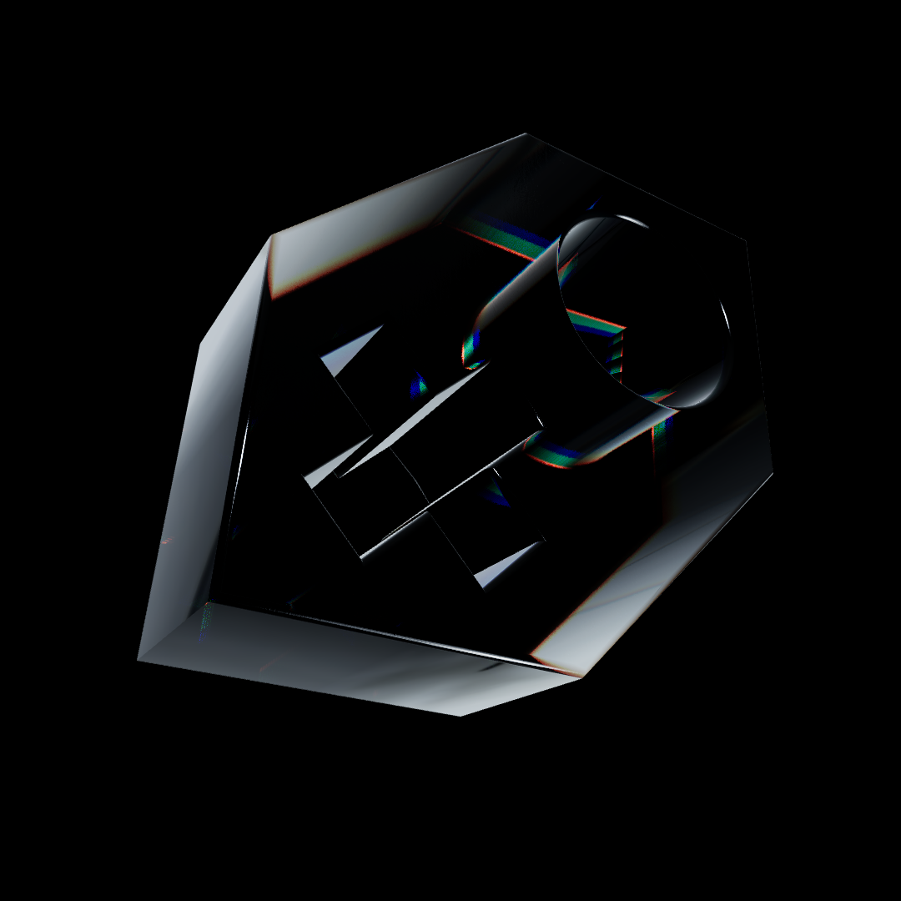
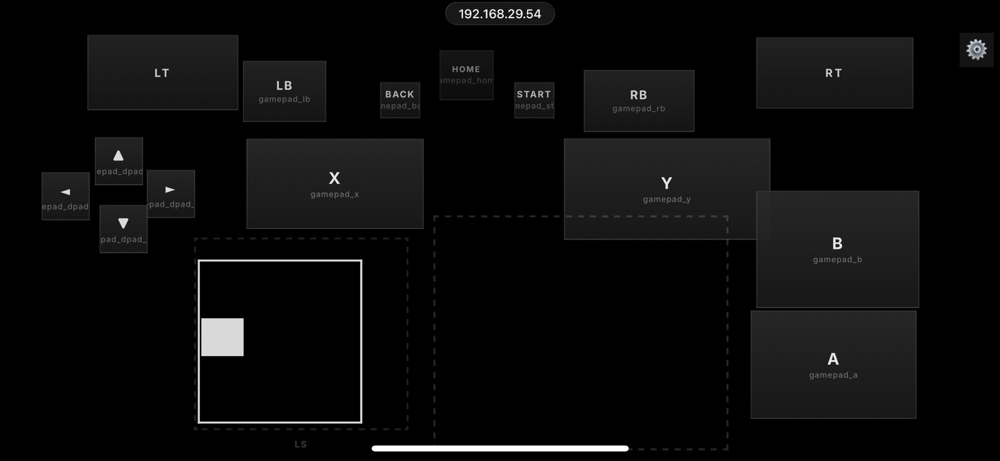
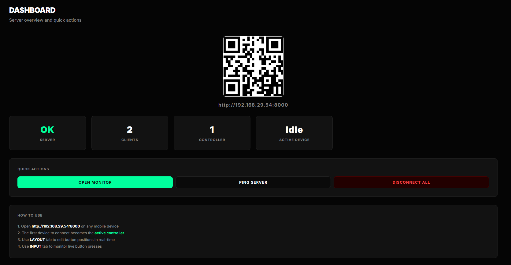
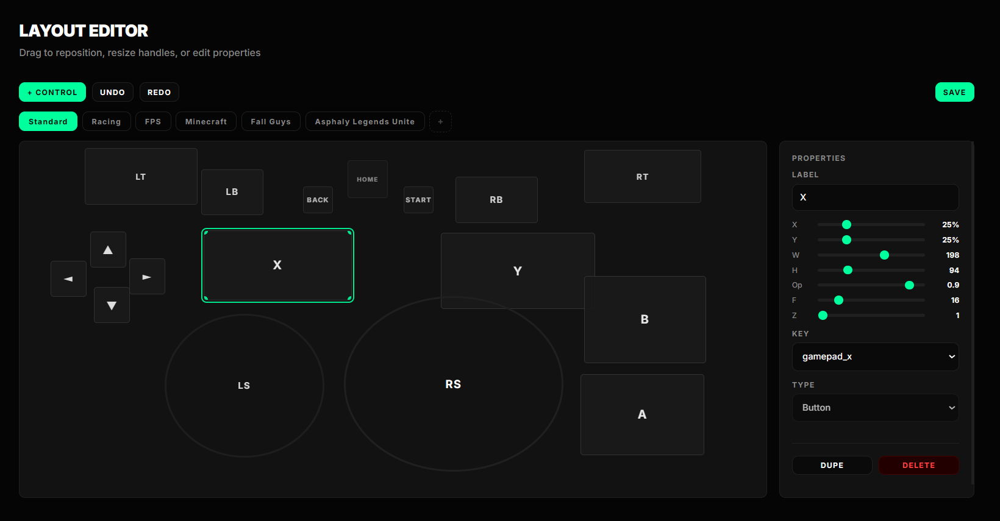
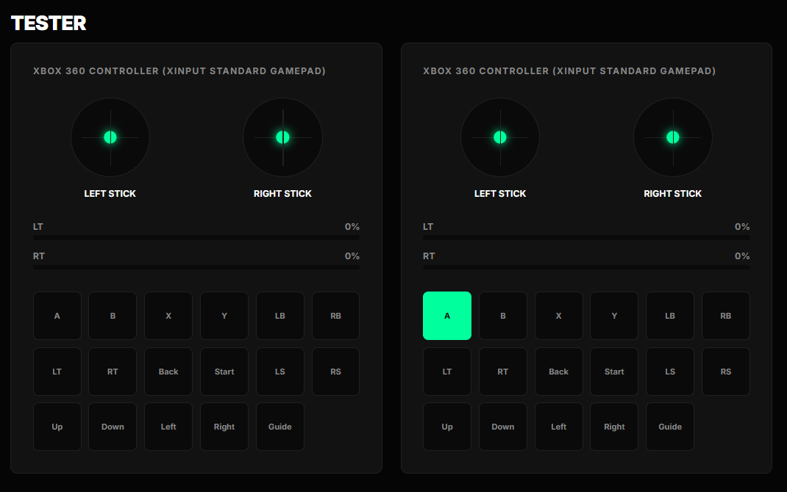

Start the server
TouchKeys.exe launches the bundled runtime, starts FastAPI on port 8000, and opens the desktop monitor at /monitor.
TouchKeys is a local-first input bridge: your phone becomes an XInput gamepad, touchpad, keyboard, or custom control surface for a Windows PC—without a mobile app or cloud account.

TouchKeys runs a small FastAPI server on your Windows PC. Your phone opens a normal webpage hosted by that server, renders the current layout, and sends touch events back over a persistent WebSocket.
The PC translates those events into real Windows input: ViGEmBus exposes a virtual Xbox 360 controller, while configured mouse and keyboard actions go through the desktop input layer.
Every hop stays visible. Every hop stays on the network you control.
TouchKeys.exe launches the bundled runtime, starts FastAPI on port 8000, and opens the desktop monitor at /monitor.
Scan the QR code or open the local address on a phone connected to the same Wi-Fi. No app store, login, or internet account.
The mobile page opens /ws. Buttons, sticks, triggers, mouse gestures, and keybinds become compact live events.
The server assigns controller slots 0–3; vgamepad talks to ViGEmBus, while pyautogui handles mouse and keyboard actions.
Built for couch co-op, accessibility, custom control rigs, media control, and the moment a spare phone is the only gamepad in the room.
Full buttons, D-pad, sticks, bumpers, triggers, Start, Back, and Guide output for controller-compatible Windows games.
Four simultaneous browser clients map to controller slots 0 through 3 for local multiplayer.
Drag, resize, duplicate, rename, re-theme, keybind, import, export, and undo/redo from the visual editor.
See connected clients, QR access, latency, live controller state, and layout updates from the PC dashboard.
Use a phone as a touchpad, scroll surface, keyboard, hotkey board, or hybrid control layout.
No database, login, companion app, or remote service. The phone-to-PC path stays on your LAN.
The controller, monitor, editor, and tester are all browser interfaces served by the same local application.




Download and run the ViGEmBus installer as Administrator. Windows needs it to expose the virtual Xbox controller.
Download driver ↓Download the standalone executable, allow Private Network firewall access if prompted, and launch it.
Download app ↓Put phone and PC on the same Wi-Fi, scan the displayed QR code, then choose or edit your layout.
Understand the flow ↓The source setup provisions Python 3.12, creates a virtual environment, installs dependencies, installs ViGEmBus, builds the standalone app, and creates a desktop shortcut.
Windows 10 or 11 (64-bit), a modern mobile browser, the PC and phone on the same LAN, and Administrator access for the one-time ViGEmBus installation.
Check that both devices are on the same non-guest Wi-Fi and that Windows Firewall allows TouchKeys or Python on Private networks over port 8000.
Confirm ViGEmBus is installed, then run joy.cpl. A virtual Xbox 360 controller should appear after the first input event.
Motion input is disabled because browsers restrict sensors on local HTTP. Some anti-cheat systems may also restrict synthetic mouse or keyboard input.
The core input engine, editor, monitor, multiplayer slots, mouse mode, and standalone distribution are in place.